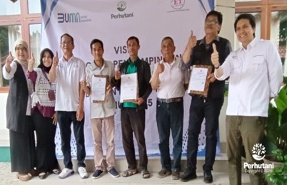

BOGOR, PERHUTANI (08/01/26) | Perum Perhutani Kesatuan Pemangkuan Hutan (KPH) Bogor bersama CV. Emir Tusin lakukan pendampingan kepada Lembaga Masyarakat Desa Hutan (LMDH) binaan agar produktif dalam berwiraswasta bertempat di Kantor KPH Bogor, Cibinong, Kabupaten Bogor pada Rabu (07/01).
Hadir pada kesempatan tersebut Kepala Seksi Keuangan, SDM, Umum dan IT Nana Suryana, Tim Divisi Regional Jawa Barat dan Banten, Direktur Utama CV. Emir Tusin Anita Yuri Astuti bersama tim, LMDH Mega Mendung Hijau, Kelompok Tani Hutan (KTH) Tunas Karya dan KTH Lestari Maju Bersama.
Dalam keterangannya mewakili Admnistratur KPH Bogor, Kasi Keuangan, SDM, Umum dan IT Nana Suryana mengatakan bahwa pendampingan ini adalah sebagai bentuk upaya Perhutani KPH Bogor dalam memberdayakan LMDH dan KTH untuk berdaya, produktif serta inovatif dalam mengembangkan usaha yang berkaitan dengan usaha atau kegiatan kehutanan dengan menggandeng CV. Emir Tusin dalam pendampingannya.
"Kami berharap dengan pendampingan ini LMDH, KTH dapat mengembangkan dan memajukan usahanya dan dapat berkelanjutan sehingga manfaatnya bisa dirasakan", ujarnya.
Sementara Direktur Utama CV. Emir Tusin Anita Yuri Astuti mengatakan bahwa pendampingan yang diberikan mencakup berbagai aspek, antara lain legalitas usaha, mulai dari pembuatan Nomor Induk Berusaha (NIB), izin Pangan Industri Rumah Tangga (PIRT), hingga persiapan untuk memperoleh izin edar dan sertifikasi halal.
"Pada kegiatan ini, selain pendampingan dan bimbingan dari Tim CV. Emir Tusin, kami juga bersama Perhutani KPH Bogor menyerahkan sertifikat Nomor Induk Berusaha (NIB). Sertifikat NIB yang sudah terdaftar ini, dapat digunakan untuk jenis usaha lainnya, sehingga LMDH dan KTH binaan dapat mengembangkannya lebih lanjut dengan berbagai jenis usaha yang lainnya", jelasnya.
Editor: WK
Copyright © 2026 Warta Nusantara Barat